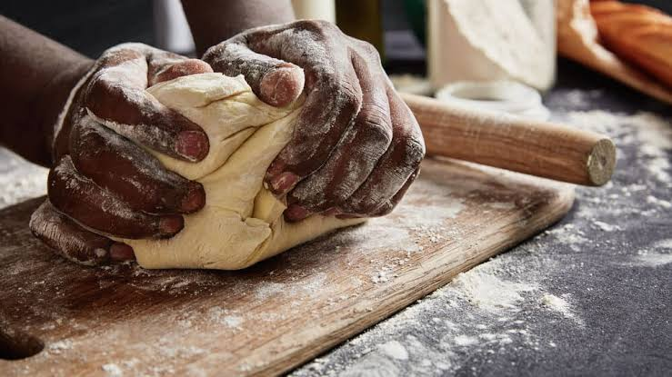
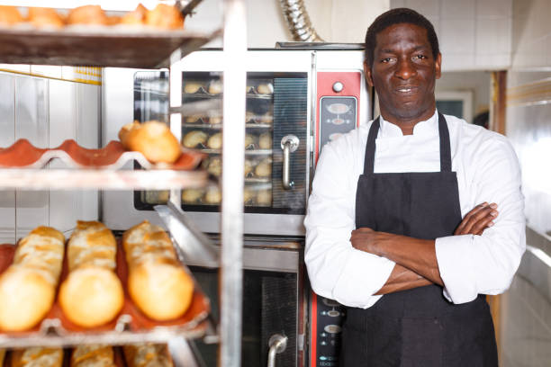

Plongez dans l’âme de notre maison
Découvrez l’histoire, la passion et le savoir-faire qui donnent vie à La Maison du Pain, où chaque création est préparée avec soin pour offrir des saveurs authentiques et un plaisir partagé.
Fabrication artisanale
L’artisanat boulanger au cœur de Dakar depuis 1998
Depuis plus de 25 ans, La Maison du Pain fait vivre la passion du pain artisanal au cœur de Dakar. Chaque jour, nous mettons notre savoir-faire et notre exigence au service de produits frais, savoureux et préparés avec soin. Plus qu’une boulangerie, nous sommes une maison de proximité, attachée à la qualité, à la tradition et aux petits plaisirs qui rassemblent.

Notre Parcours
Plus de 25 ans de passion boulangère au Cœur de Dakar
Depuis 1998, nous perpétuons un savoir-faire artisanal fondé sur la passion du pain, l'exigence de qualité et la proximité avec nos clients. Au fil des années, chaque fournée a contribué à écrire notre histoire, avec une ambition constante : offrir à chacun un pain frais, savoureux et préparé avec soin.
La naissance d'une passion
Tout commence en 1998 avec une ambition simple : proposer un pain frais, savoureux et accessible. Les premières fournées posent les fondations d'une aventure humaine.
La confiance de nos premiers clients
Au fil des années, les habitudes se créent et la fidélité s'installe. La qualité du pain et la régularité du service deviennent les piliers de notre relation avec la clientèle.
Un savoir-faire qui se développe
Forte de son expérience, la boulangerie cherche à améliorer ses méthodes de fabrication et à diversifier ses produits pour répondre aux attentes d'une clientèle toujours plus exigeante.
Une nouvelle étape dans notre évolution
On poursuit son développement en accordant davantage d'importance à l'accueil, à l'hygiène et à la constance de la qualité, tout en préservant son esprit artisanal.
Un héritage tourné vers l'avenir
Riche de son histoire La Maison du Pain poursuit son évolution afin de préserver la tradition boulangère tout en innovant pour répondre aux besoins des générations futures.
Nos Engagements
Les Valeurs de la boulangerie
Qualité
Sélection stricte des farines pur blé et du beurre AOP. Zéro additif chimique.
Passion Artisanale
Gestes précis transmis de maître boulanger à apprenti pour un façonnage parfait.
Tradition & Levain
Levain mère rafraîchi chaque jour pour préserver la vraie tradition boulangere.
Accueil Chaleureux
La convivialité sénégalaise alliée au savoir-faire d'une boulangerie de quartier.

Le Mot du Chef
Pour nous, le pain est bien plus qu'un aliment : c'est un symbole de partage, de tradition et de convivialité. Chaque jour, nous mettons notre savoir-faire et notre passion au service de nos clients, afin de leur offrir des produits frais, savoureux et préparés avec soin.
Le Chef Boulanger
Mr Dione - La Maion du Pain